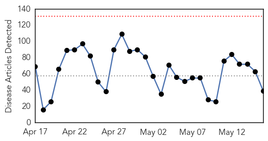
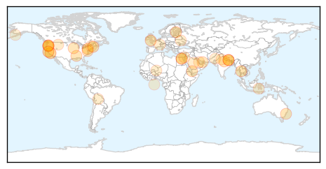

Toggle navigation
Early Warning
Daily Alerts
Unknown
May 16, 2015
Compare to:
-
Dengue Fever
Hemmorhagic Fever
Mold/Fungal Infection
Influenza
Meningitis
Pertussis / Whooping Cough
Middle East Respiratory Syndrome
Cholera
Hepatitis
Chikungunya
Yellow Fever
Bubonic Plague
West Nile Virus
Swine Flu
Ebola
Measles
Mumps
30 Day Trends
Web: 0
alerts
, 0
warnings
Twitter: 1
alerts
, 0
warnings
Top Articles:
0.976
Lyme disease: Doctors advise against long-term antibiotic treatment Republican American
0.921
Harsh winter does little to ease Lyme disease woes
0.917
Chicago Tribune
0.914
Upsurge in bird flu human cases in Egypt: WHO
0.911
Virus outbreak on Royal Navy base: SEVENTY struck down with vomiting bug
0.908
Dangerous strain of tick-borne encephalitis spreads
0.844
Humans Can "Laterally Spread" Avian Flu
0.829
Yemen Gets Continuous Supply Of Medicals From WHO -
0.829
Oregon Health Authority issues alert for Detroit Lake due to 'high toxin' levels
0.822
Summer arrives with bagful of infectious diseases
0.820
More children being treated for TB after exposure at inner city child care centre
0.815
Poultry from bird flu states banned from Ohio State Fair
0.812
California, New Mexico and Arizona Report Salmonella Sushi Outbreak
0.809
Interview: "We are racing against time" to help Nepal prevent post-quake epidemic threats: China Medical Team head
0.805
Interview: "We are racing against time" to help Nepal prevent post-quake epidemic threats: China Medical Team head
0.801
Health Hazard At Detroit Lake
0.766
Early detection of kidney disease can halt progression
0.731
SFBay :: San Francisco Bay Area News and Sports
0.714
STUDY: Norovirus can be contracted by swimming in lakes
0.686
Egypt is totally free of Malaria: says Health Ministry
0.685
Health advisory issued for Detroit Lake; High toxin level found in blue-green algae in reservoir, Oregon Health Authority says
0.673
The Westside StoryThe Westside Story
0.661
Sushi Salmonella Outbreak in New Mexico Sickens Six
0.636
Public Health Accreditation Board Awards Accreditation Status to Eight More Health Departments
0.604
Pope calls Palestinian President Abbas ‘angel of peace’
0.604
Ecuador wants to show Europe the way to happiness
0.601
Ukraine bans Soviet-era symbols
0.601
Mali’s Tuareg-led separatists boycott peace deal
0.601
Egypt’s deposed president Morsi sentenced to death
0.585
US commandos kill senior IS group leader in Syria raid
0.585
Sarkozy’s UMP party to face court over 'Républicains' name change
0.583
Investigation Launched into Salmonella Sushi Outbreak
0.571
JHANG City News
0.568
The Caledonian-Record
0.548
Suppressing Immune System Might Save People Infected By Brain-Eating Amoeba Naegleria Fowleri
0.538
Editorial: Preparing for the worst
0.527
Emirati field hospital arrives in NepalUAE
0.522
Public Health Accreditation Board Awards Accreditation Status to Eight More Health Departments
0.515
Five Watched, Three Treated for Botulism after Seperate Koyuk Seal Flipper Meals
Top Tweets:
No tweets found for May 16, 2015
Web/News Articles

Tweets
Article Locations

Article Confidences